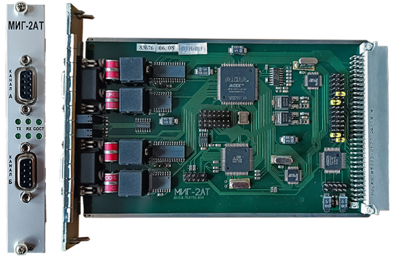

Замена МИГ-2АТ

Замена неисправного модуля МИГ-2АТ производится при выключенном питании «Основного» или «Резервного» комплекта микропроцессорного блока (БМ), того комплекта, где устанавлен неисправный модуль МИГ-2АТ.
Отключение питания осуществляется на модуле источника питания (МИП) «Основного» или «Резервного» комплекта.
Порядок замены модуля МИГ-2АТ:
- Отключить питание на МИП и отсоединить с лицевой панели МИГ-2АТ все кабели;
- Открутить фиксирующие модуль МИГ-2АТ винты и извлечь модуль из БМ;
- Взять исправный модуль МИГ-2АТ. Перемычки на новом и извлечённом модуле должны занимать одинаковые позиции;
- Вставить новый модуль МИГ-2АТ в БМ и вставить в него соединительные кабели. Разъём кабеля с красной полосой должен занимать верхнюю позицию, т.е. канал А;
- Зафиксировать новый модуль МИГ-2АТ винтами;
- Включить питание на МИП.